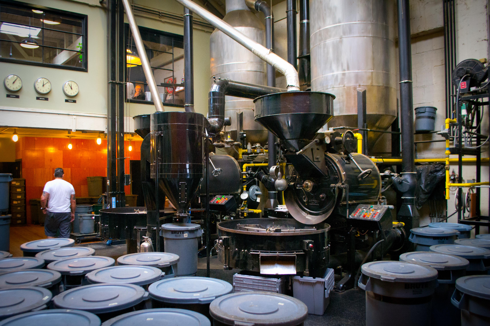

[ Drop here ]

Roasting Machine
Roasting coffee transforms the chemical and physical properties of green coffee beans into roasted coffee products. The roasting process is what produces the characteristic flavor of coffee by causing the green coffee beans to change in taste. Unroasted beans contain similar if not higher levels of acids, protein, sugars, and caffeine as those that have been roasted, but lack the taste of roasted coffee beans due to the Maillard and other chemical reactions that occur during roasting.
Roast it >
Cool it >
Get your bean! >